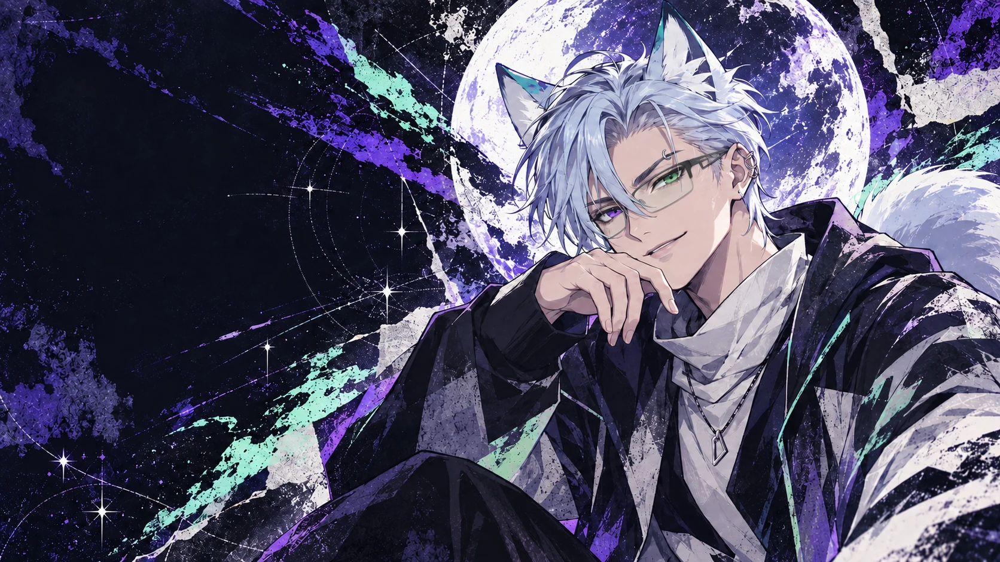

LIVE CHAOS
Competitive games, first reactions and chat-controlled decisions.

Independent VTuber EN / PT
MYTHICAL SILVER WOLF.
UNFILTERED DIGITAL CHAOS.
On air now
THE WOLF
BEHIND THE
STATIC.
Haruto Ginrou is an independent English and Portuguese VTuber—a mythical silver wolf built for chaotic live sessions, sharp reactions and the kind of late-night conversations that refuse to end.
Expect competitive FPS, long-form RPG and MMO adventures, strategy, gacha pulls, horror, collabs and community-powered detours.
Streams that can go from tactical focus to complete chaos in one match.
Competitive games, first reactions and chat-controlled decisions.
Clips, shorts and concentrated moments of questionable judgment.
Anime, manga, horror and unfiltered conversations with the pack.
The weekly lineup moves with new games, collabs and special events. Follow X for the exact drop times.
Live times and changes are posted on X in advance. Turn on notifications so you don’t miss the signal.
Find the wolf online
JOIN THE
PACK.